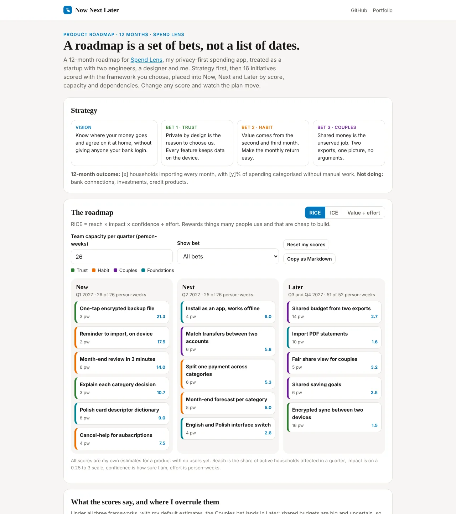

The problem
Static roadmaps hide the constraints that decide them. I wanted one where strategy, capacity and dependencies are live, and where judgement overrules the score in writing.

What it does
- Strategy with three bets and a not-doing list.
- Three scoring frameworks side by side.
- Capacity and dependencies decide the quarter.
- Editor and pinning with warnings.
Findings and decisions
From my own estimates
Scoring pushes the strategic bet to Later
Under all three frameworks, shared budgets for couples land in Q3 or Q4 because they are big and uncertain. I would pin them to Next and run interviews first.
What I would do next
- Replace estimates with data once Spend Lens has users.
- Confidence ranges.
- One-page brief per initiative.